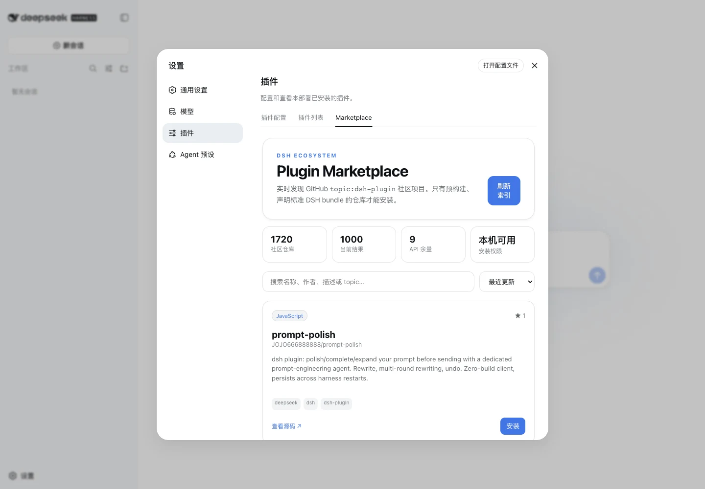

DESKTOP RUNTIME FOR DEEPSEEK HARNESS
从 clone 到 run，
只差一次点击。
标准 Harness Web 体验、原生桌面生命周期和默认插件市场。无需仓库配置、启动命令或单独浏览器。
v0.2.0 · macOS Apple Silicon · Windows ARM64 / x64
Marketplace included
插件生态，
现在就在应用里。
实时发现 GitHub topic:dsh-plugin；亮暗主题跟随 DSH。Desktop 固定内置 dsh-marketplace v0.1.1。

marketplace.readybundled · immutable
Three-source identity
壳子保持薄，
Harness 保持完整。
Desktop 不复制 agent、LLM、loop 或 Web UI。每个安装包固定并记录 Desktop、官方 Harness 和 Marketplace 三份来源。
deepseek-ai/deepseek-harness ↗- 01Desktop supervisorElectron lifecycle · recovery
- 02Pinned Harnessofficial Git submodule
- 03Bundled Marketplaceoffline release closure
- 04Local Web UI127.0.0.1 · OS-selected port
desktopVersion0.2.0
desktopCommitrelease tag
upstreamCommit47f943859bef
marketplaceVersion0.1.1
Unsigned community preview
把 Harness 放进 Dock。
当前构建未签名、未 notarize。请核对 SHA256SUMS，并只对本应用完成系统正常信任确认，不要关闭安全机制。